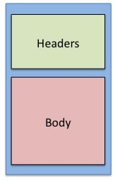
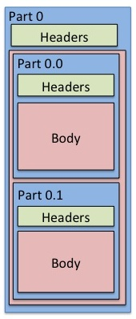
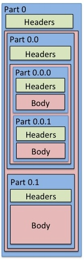
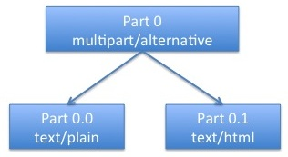
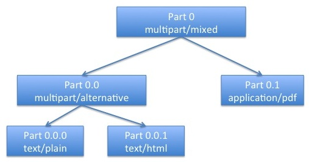

Pantomime is a Java library for parsing and manipulating MIME email messages.
Please read Read Me First to get started.
Pantomime is a Java library for parsing and manipulating MIME email messages.
Pantomime is replacement for the MIME-manipulation features of JavaMail.
Pantomime is:
Download Pantomime from https://bitbucket.org/barbee/pantomime/downloads.
Pantomime is licensed under Mozilla Public License v 2.0
Pantomime is written by JH Barbee
The API documentation is available at http://barbee.bitbucket.org/pantomime/javadocs/
This manual serves to instruct you on how to use Pantomime.
You do not need to read the entire manual to get started.
Next to JavaMail, Pantomime is more robust, memory efficient, and is more convenient.
JavaMail is adequate for a great majority of eamil. However, it often falls short, especially with real-world messages that veer slightly from RFC compliance.
Example 1
From: ernie@sesame.edu
To: bert@sesame.edu
Subject: Dishes
Content-Type: multipart/alternative
You didn't wash the dishes last night.
JavaMail will throw a MessagingException due to a missing start boundary. Your recourse is to reconfigure JavaMail to allow for non-compliance or modify the text to fix the boundary.
Reconfiguring JavaMail would only go so far since JavaMail is rather strict. This wouldn't solve all your problems.
To fix the boundary, you would need to write a lot of code to handle all the edge cases, since there are so many ways to break boundaries.
Pantomime will parse this message without a problem.
Example 2
From: bert@sesame.edu
To: ernie@sesame.edu
Subject: Re: Dishes
Content-Type: text/plain; charset="US-ASCII"
It wasn't my turn.
JavaMail will throw an UnsupportedEncodingException since it does not understand US-ASCII as a valid character set.
Pantomime, instead, will make a best effort to parse this somehow.
Example 3
From: ernie@sesame.edu
To: bigBird@sesame.edu, elmo@@sesame.edu
Subject: Fwd: Dishes
Content-Type: text/plain
Big Bird,
Can you talk to Bert? Our sink is overflowing.
Ernie.
JavaMail will fail the entire message with an AddressException because of the extra @ in Elmo's email address.
Pantomime, instead, will make note of the invalid address and allow you to continue. You can use the Pantomime API to check the validity of addresses and decide programmatically what you want to do.
JavaMail will throw an OutOfMemoryException for large messages. By large messages we mean anything over 20 - 30 MB. The exception is rooted in proprietary com.sun classes that will load data into a byte array in memory, even if you provided the content as an input stream. There is not much you can do here.
Used properly, Pantomime can handle messages of any size as it is inherently stream-based.
To create a text/plain message with JavaMail, you would need to do this.
Session session = Session.getDefaultInstance(new Properties());
MimeMessage mime = new MimeMessage(session)
mime.setFrom(new InternetAddress("ernie@sesame.edu"));
mime.setSubject("Re: Dishes");
mime.setText("We need to talk.", "utf-8", "plain")
In contrast, Pantomime ships with a collection of static utility methods that allow you to do this with one call.
Pantomime.plain("ernie@sesame.edu", "Re: Dishes", "We need to talk.", "bert@sesame.edu");
Supposing you want to allow rich-text formatting in this email and you would want to create a multipart/alternative message instead. (If you are not sure what multipart/alternative is, please review MIME For Email.)
In JavaMail
Session session = Session.getDefaultInstance(new Properties());
MimeMessage mime = new MimeMessage(session)
MimeBodyPart plain = new MimeBodyPart();
MimeBodyPart html = new MimeBodyPart();
MimeMultipart alternative = new MimeMultipart();
plain.setText("We need to talk.", "utf-8", "plain")
html.setText("<b>We need to talk.</b>", "utf-8", "html")
alternative.addBodyPart(plain)
alternative.addBodyPart(html)
alternative.setSubType('alternative')
mime.setContent(alternative)
mime.setFrom(new InternetAddress("ernie@sesame.edu"));
mime.setSubject("Re: Dishes");
With Pantomime it is still just one method call.
Pantomime.alternative("ernie@sesame.edu", "Re: Dishes",
"We need to talk.", "<b>We need to talk.</b>",
"bert@sesame.edu");
For our last contrast of Pantomime's convenience versus JavaMail, we will illustrate the difference when we add an attachment to the message.
In JavaMail
Session session = Session.getDefaultInstance(new Properties());
MimeMessage mime = new MimeMessage(session)
MimeBodyPart plain = new MimeBodyPart();
MimeBodyPart html = new MimeBodyPart();
MimeMultipart alternative = new MimeMultipart();
MimeBodyPart alternativeContainer = new MimeBodyPart();
MimeBodyPart attachment = new MimeBodyPart();
MimeMultipart mixed = new MimeMultipart();
FileDataSource dataSource;
plain.setText("We need to talk.", "utf-8", "plain");
html.setText("<b>We need to talk.</b>", "utf-8", "html");
alternative.addBodyPart(plain);
alternative.addBodyPart(html);
alternative.setSubType('alternative');
alternativeContainer.setContent(alternative);
dataSource = new FileDataSource("expenses.csv");
attachment.setDataHandler(new DataHandler(dataSource));
attachment.setDisposition(javax.mail.Part.ATTACHMENT)
mixed.addBodyPart(alternative);
mixed.addBodyPart(attachment);
mime.setContent(mixed)
mime.setFrom(new InternetAddress("ernie@sesame.edu"));
mime.setSubject("Re: Dishes");
In Pantomime, you need just two lines.
Message message = Pantomime.alternative("ernie@sesame.edu",
"Re: Dishes", "We need to talk.",
"<b>We need to talk.</b>", "bert@sesame.edu");
message.addAttachment("expenses.csv")
To install Pantomime, download the latest distribution from https://bitbucket.org/barbee/pantomime/downloads and drop it into your classpath next to the JavaMail jar.
Remember that Pantomime is a replacement only for JavaMail's MIME-manipulation features. JavaMail is still required if you want to send the message.
Pantomime also requires SLF4J for logging. You choose which logging you want.
If you find a bug, please file it at https://bitbucket.org/barbee/pantomime/issues.
If you have questions, please post to http://stackoverflow.com/
To create a plain text message, use the Pantomime convenience API.
import org.blackmist.pantomime.Pantomime;
Pantomime.plain("from@address.com", "subject",
"body", "to@address.com");
Here is another example where the body comes from a file and there are multiple recipients.
import org.blackmist.pantomime.Pantomime;
String[] toAddresses = {"to@address1.com", "to@address2.com"};
String[] ccAddresses = {"cc@address1.com", "cc@address2.com"};
Pantomime.plain("from@address.com", "subject", new File("body.txt"),
toAddresses, ccAddressses);
In addition to String and File, the Pantomime convenience API also accepts the body as an InputStream.
To send a rich-text HTML message instead of plain text, simply call html() instead.
import org.blackmist.pantomime.Pantomime;
Pantomime.html("from@address.com", "subject",
"<b>body<b>", "to@address.com");
People like sending email in rich text format with fonts, colors, and layout. HTML has become the de facto standard for such. However, what if the recipient has an email client that cannot display HTML? They need to take your HTML, save it out to a file, and open it in a browser. It's a pain.
With multipart/alternative, you send both plain text and HTML. If the recipient has an older email client, they can still read the the text. If you want rich text definitely go with alternative content or related content content instead of HTML only.
To send multipart/alternative with Pantomime, use the Pantomime convenience API.
import org.blackmist.pantomime.Pantomime;
Pantomime.alternative("from@address.com", "subject",
"plain body", "<b>html body<b>", "to@address.com");
Like Pantomime.plain() and Pantomime.html(), Pantomime.alternative() will accept a String, File, or InputStream for plain and HTML bodies, in any combination.
Our previous example involves creating new messages. What if you want to load an existing message?
Here is how to load a message from file using Pantomime.
import java.io.File;
import org.blackmist.pantomime.FileMessageSource;
import org.blackmist.panotmime.SourcedMessage;
File emailFile = new File("message.eml")
FileMessageSource source = new FileMessageSource(emailFile);
SourcedMessage message = null;
try {
message = source.load();
} finally {
Pantomime.free(message);
}
The SourcedMessage class inherits from Message, so you have access to all the same methods.
Loading a message from the database is similar to loading from a file.
import java.sql.Connection;
import java.sql.Statement;
import java.sql.ResultSet;
import java.sql.Blob;
import org.blackmist.pantomime.BlobMessageSource;
import org.blackmist.pantomime.SourcedMessage;
Class.forName("com.mysql.jdbc.Driver");
Connection connection =
DriverManager.getConnection("jdbc:mysql://localhost:3306/pantomime", "username", "password");
Statement statement =
connection.prepareStatement('select blob from table where id = primary_key');
ResultSet resultSet = statement.executeQuery();
Blob blob = null;
resultSet.next()
blob = resultSet.getBlob(1)
BlobMessageSource source = new BlobMessageSource(blob);
SourcedMessage message = null;
try {
message = source.load();
} finally {
Pantomime.free(message);
}
To convert from a JavaMail MimeMessage, do the following.
import org.blackmist.pantomime.JavaMailMessageSource;
import org.blackmist.pantomime.SourcedMessage;
JavaMailMessageSource source =
new JavaMailMessageSource(mime);
SourcedMessage message = source.load();
The MessageSource subclasses does more than let you read message from storage, they can also save to storage.
Supposing you created a new message or loaded it from JavaMail and want to archive it to a file.
Do the following:
import org.blackmist.pantomime.FileMessageSource;
import org.blackmist.panotmime.SourcedMessage;
FileMessageSource source =
new FileMessage("/where/i/want/to/save/this/message.eml");
SourcedMessage saved = null;
try {
/* message is a Message object that you
* got from somewhere.
*/
saved = message.saveAs(source);
/* do some stuff */
} finally {
Pantomime.free(saved);
}
The saved object is now a new Message object, backed by a file.
Pantomime is strictly a library for parsing and manipulating MIME messages for email. To send this message, you still need to use JavaMail.
Like so:
import javax.mail.mime.MimeMessage;
import javax.mail.Transport;
MimeMessage mime = message.toJavaMail();
Transport.sendMessage(mime);
MIME stands for Multipurpose Internet Mail Extensions.
It is used for both email and web. In this manual, we only concern ourselves with email usage.
MIME is defined in RFC 2045 RFC 2046 RFC 2047 RFC 2049 RFC 4288 RFC 4289.
MIME messages must be written in ASCII. So if your message contains languages other than English or binary, the data must be encoded in ASCII before it may be sent.
To convert the message into ASCII, you must use one of the following transfer encodings: 7bit, 8bit, quote-printable, base64, or binary. (Binary tranfer encoding is not popular and not always supported.) Pantomime will take care of the transfer encoding under the hood. You won't need to worry about it. This paragraph is just informational.
MIME has two parts: header and body. The header and body are separate by a blank line.
It looks like this.

Each MIME body is allowed to contain other MIME parts. Here is a MIME part that has a body that contains two other MIME parts. (Note: This is what a multipart/alternative message would look like.)

Pantomime assigns a MimePath to each MIME part. Like a path that uniquely addresses a file on disk, a MimePath uniquely identifies each MIME part. The top-level MIME message always has the MimePath 0. Contained MIME parts have MimePaths that use the . to indicate their child status. So here we have a MIME message (MimePath 0) that has a body that contains two other MIME parts. Their MimePaths are 0.0 and 0.1.
MIME is inherently recursive and has no limit as to how many levels it can go. Below is an example of a MIME part with even deeper nested parts. (Note: This is typically what a multipart/alternative message with an attachment would look like.)

Let dig deeper into MIME and discuss the differences between a multipart and single part. To facilitate this discussion we will switch from nested boxes to a more didactic tree paradigm. Our tree nodes will abstract from headers and bodies and just show the MIME parts.
This is a MIME tree with a single node, i.e. single MIME part with a text/plain content type. This is a single part, it has its own plain text content.
Following is a slightly more complex MIME part. Part 0 is a multipart. Its content type is multipart/alternative. This MIME part does not contain any content of its own but is simply there to serve as a container for other single parts which do contain content.

To complete our illustration we have a three-level MIME tree. Part 0 is a multipart. Its content type is multipart/mixed. Part 0.0 is also a multipart with the content type multipart/alternative. Parts 0.0.0, 0.0.1 and 0.1 are all single parts that contain content. One has plain text. One has HTML. The last is a PDF attachment.

So what are these multipart content type? What is multipart/alternative and multipart/mixed.
Clearly multipart and single MIME parts are very different beasts. With single parts you would want to be able to get and set the content. With multiparts, on the other hand, you would want to be able to get the count of subordinate MIME parts, among other operations.
The Pantomime API makes a clear distinction between the two. The developer must explicitly understand whether he or she is manipulating a single part or multipart. The heart of Pantomime is the Part class. It contains methods that apply to any MIME part, multipart or otherwise. Any single part-specific or multipart-specific methods are available in inner classes therein. Access a single part operation through the asSinglePart() method. Access a multipart operation through the asMultipart() method. Before calling asSinglePart() or asMultipart(), it is the developer's responsibility to verify that a given MIME part is in fact single part or multipart.
For example, if you want to set the content in a single part.
if ( ! part.isMultipart() )
part.asSinglePart().set("my new content");
}
Note that for a text/plain, text/html, or multipart/alternative message, you would just use the convenience API for convenience.
On the other hand, if you want to get the number of sub MIME parts.
if ( part.isMultipart() )
part.asMultipart().getSubPartCount();
}
If you are performing advanced MIME manipulation where you need to create subordinate parts or restructure a MIME message, you may need to convert a single part into a multipart or vice versa. To do so, you will need the specializeAsSinglePart() and specializeAsMultipart() methods.
For more information, please refere to the Wikipedia page on MIME.
Before reading this cookbook, please review MIME For Email.
A plain text and HTML message with inline images requires a multipart/related message.
Do the following:
import org.blackmist.panotmime.Message;
import org.blackmist.pantomime.content.*;
Message message = new Message();
SimpleContent plain = new SimpleContent();
SimpleContent html = new SimpleContent();
InlineImage image = new InlineImage();
RelatedContent related = new RelatedContent();
image.setFile(new File("my/picture.jpg"));
image.setType("image/jpg");
image.setContentId("jpeg123");
plain.set("my plain content");
html.set("<b>my html content</b>"");
related.setPlain(plain);
related.setHtml(html);
related.setImages(image);
message.specializeAsMultipart();
message.asMultipart().set(related)
For most messages you can get the content like so:
message.getPlainBodyAsString()
or
message.getHtmlBodyAsString()
getPlainBodyAsString() will return the first text/plain MIME part with a depth-first search.
getHtmlBodyAsString() will return the first text/html MIME part with a depth-first search.
If you want to get the content of all text/plain MIME parts, you would do the following:
import java.util.ArrayList;
import java.util.Stack;
import org.blackmist.pantomime.Part;
Stack<Part> parts = new Stack<Part>();
ArrayList<Part> plainParts = new ArrayList<Part>();
parts.push(message);
while ( ! parts.empty() ) {
Part part parts.pop();
if ( part.isMultipart() ) {
parts.addAll(part.asMultipart().getSubParts());
} else {
if ( part.asSinglePart().isPlainText()) ) {
plainParts.add(part);
}
}
}
Manipulating headers is straightforward.
You can use an int or String for the value.
Add a header:
part.addHeader("X-My-Header", "1");
part.addHeader("X-My-Header", 2);
There are now two headers.
Set a header
part.setHeader("X-My-Header", 3);
There is now 1 header.
Remove a header:
part.removeHeader("X-My-Header");
There are now 0 headers.
If this is a SourcedMessage, you'll need to call save() afterwards.
message.save();
Oftentimes, you may be asked to programmatically blind carbon copy a special archive mailbox before sending out a message.
Simply do this:
message.addBccRecipient("archive@nsa.gov");
If this is a SourcedMessage, you'll need to call save() afterwards.
message.save();
To get the size of a message:
message.getTransferEncodedSize();
Just the body:
if ( ! message.isMultipart() )
message.asSinglePart().getTransferEncodedBodySize();
}
Sometimes you may be asked to programmatically determine if a user is sending out oversized attachments. The Message API has a method to return all attachments in a MIME message, no matter where they are nested.
import java.util.List;
import org.blackmist.pantomime.Attachment;
List<Attachment> attachments = message.getAllAttachments();
for ( Attachment attachment : attachments ) {
long size = attachment.asSinglePart().getTransferEncodedBodySize();
if ( size > (10*1024*1024) ) {
return true;
}
}
Pantomime provides numerous API calls to add an attachment.
Simply add a file.
message.addAttachment(new File("my_file.txt"))
Add a String as a file.
message.addAttachment("my attachment content, "filename.txt");
You can also add content by a stream.
message.addAttachment(new InputStreamSource() {
public InputStream getInputStream() {
return myStream.getInputStream();
}
}, "filename.txt");
For all three of these you can also provide a third argument to explicitly set the content type, like application/pdf, image/gif, or application/octet-stream.
If this is a SourcedMessage, you'll need to call save() afterwards.
message.save();
Before reading this cookbook, please review MIME For Email.
Sometimes companies want to search for sensitive data in email messages. Here is a simple implementation. Assume that there is a method called checkForSocialSecurityNumbers().
import java.util.ArrayList;
import java.util.Stack;
import org.blackmist.pantomime.Part;
Stack<Part> parts = new Stack<Part>();
ArrayList<Part> plainParts = new ArrayList<Part>();
parts.push(message);
while ( ! parts.empty() ) {
Part part parts.pop();
if ( part.isMultipart() ) {
parts.addAll(part.asMultipart().getSubParts());
} else {
checkForSocialSecurityNumbers(part.asSinglePart().getBody());
}
}
Often companies want to add a disclaimer to the bottom of a message. The challenge here is that a message could be text/plain, text/html, multipart/alternative, multipart/related, or multipart/mixed. With text/plain the job is simple. With text/html, it's slightly more difficult, you'll need to search for the closing body or html tag and insert the footer there. With multipart/alternative and multipart/related you'll need to update both contained subordinate MIME parts. With multipart/mixed, the plain text or HTML parts are buried even further.
Below is a sample implementation:
private static final byte[] FOOTER = "my footer".getBytes();
private void insertFooterInPlain(Part part) {
ContentType contentType = part.getContentType();
String newContent = part.getBodyAsString();
newContent += "\r\n" + FOOTER;
part.set(newContent.toString(), contentType.getType(),
contentType.getCharset())
}
private void insertFooterInHtml(Part part) {
ContentType contentType = part.getContentType();
String newContent = part.getBodyAsString();
int pos = 0;
pos = newContent.toLowerCase().substring("</body>");
if ( pos == -1 ) {
pos = newContent.toLowerCase().substring("</html>");
}
if ( pos == -1 ) {
newContent += "<p>" + "FOOTER;
} else {
newContent = newContent.substring(0, pos) + "<p>" +
FOOTER + newContent.substring(pos+1);
}
part.set(newContent, contentType.getType(),
contentType.getCharset())
}
public void addFooter(Part part) {
if ( part.isMultipart() ) {
boolean found = false;
for ( Part subpart : part.getSubParts() ) {
if ( addFooter(subpart) ) {
found = true;
}
}
return found;
} else if ( part.asSinglePart().isHtml() ) {
insertFooterInHtml(message);
return true;
} else if ( part.asSinglePart().isPlainText() ) {
insertFooterInPlain(message);
return true;
}
}
publci void processMessage(Message message) {
addFooter(message);
}
(Note that the above sample implementation only works with messages where the readable content is small, say less than 20MB. To work with large message, use getBody() instead of getBodyAsString())
If this is a SourcedMessage, you'll need to call save() afterwards.
message.save();
private boolean shouldDelete(Attachment attachment, String filename) {
Attachment attachment = (Attachment)child;
String name;
if ( ! attachment.hasFilename() ) {
return false;
}
name = attachment.getFilename();
if ( ! filename.equals(name) ) {
return false;
}
return true;
}
private void removeAttachment(Part parent, String filename) {
int count = message.asMultipart().getSubPartCount();
for ( int index = 0; index < coount; index++ ) {
Part part = message.asMultipart().getSubParts()[index];
if ( part instanceof Attachment ) {
if ( shouldDelete((Attachment)part, filename) ) {
parent.removeSubPart(index);
return;
}
} else if ( part.isMultipart() ) {
removeAttachment(part, filename);
}
}
}
public void removeAttachment(Message message, String filename) {
if ( ! message.isMultipart() ) {
return;
}
removeAttachment(message, filename)
}
If this is a SourcedMessage, you'll need to call save() afterwards.
message.save();
This will change an attachment filename.
import java.util.List;
import org.blackmist.pantomime.Attachment;
import org.blackmist.pantomime.ContentDisposition;
List<Attachment> attachments = message.getAllAttachments();
for ( Attachment attachment : attachments ) {
String filename;
ContentDisposition dispsotion;
String headerValue;
if ( attachment.hasFilename() ) {
continue;
}
filename = attachment.getFilename();
if ( filename.equals("the_filename_i_want_to_change.txt") ) {
continue;
}
disposition = attachment.getContentDisposition();
headerValue = disposition.getValue();
headerValue = headerValue.replace(filename,
"my_new_filename.txt");
disposition.setValue(headerValue);
}
If this is a SourcedMessage, you'll need to call save() afterwards.
message.save();